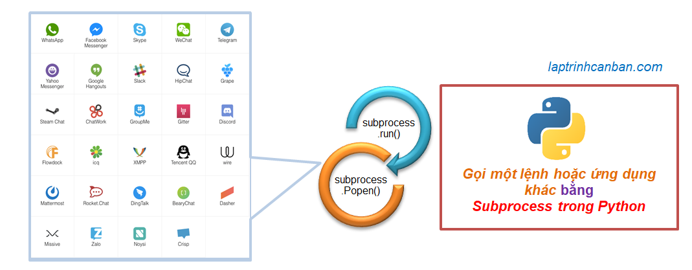

記事掲載：https://laptrinhcanban.com/ja
Python でsubprocess モジュールを使用して、Pythonから別のコマンドまたはアプリケーションを呼び出す手順。このレッスンの後、Python での同期および非同期処理のために subprocess モジュールでsubprocess.run ()およびsubprocess.Popen( )を使用する方法も学びます。
PythonのSubprocessとは
PythonのSubprocessとはPython プログラムからコマンドやその他のアプリケーションを実行し、その実行結果を取得するのに役立つモジュールです。Subprocessは サブプロセスモジュールとも呼ばれ、Python 標準ライブラリに含まれています。

サブプロセスは、Python スクリプト内からコマンドまたは外部アプリケーションを呼び出すことができます。たとえば、サブプロセスを使用すると、次のことができます。
- Python から CMD コマンドを実行する
- Python から 7z ファイル圧縮プログラムを呼び出す
- Python から AWS CLI コマンドを実行する
- Python から Web デプロイ コマンドを実行する
- Python でシェル コマンドを実行する
Python の古いバージョンでは、call()、check_call()、check_output()、Popen() などの多くの関数で Python の subprocessを使用していました。ただし、Python 3.5 以降、Python のサブプロセスは作り直され、すべてのケースに共通の関数 subprocess.run() と、より柔軟なオプションを提供するクラスを使用するだけで済みます。開発者にとっては、subprocess.Popen() のみ使えば良いです。 .
Python での Subprocess.run() と同期処理
subprocess.run() 関数は、Python から別のコマンドまたはアプリケーションを呼び出すときに同期プロセスを作成するのに役立ちます。つまり、別のコマンドまたはアプリケーションが呼び出された場合、プログラムで次の python コマンドを実行する前に、それが終了するのを待つ必要があります。この同期処理については、次のセクションで説明します
Python の subprocess.run() 関数の構文
次の構文で subprocess.run() 関数を使用します。
import subprocess
subprocess.run ([“実行コマンド”], オプション)
そこで：
- 実行コマンド: Pythonからのアプリケーション呼び出しまたはその他のステートメントです。たとえば、Python からの 7z ファイル圧縮プログラムの呼び出しは、 「C:/Program Files/7-Zip/ 7z.exe a test.7z」、または CMD コマンドを使用して、windows またはlsなどの Linux で。
- オプション: サブプロセスを使用するときに追加できる指定子です。
Python で subprocess を使用する際に指定できる一般的なオプションは次のとおりです。
| オプション | 機能 | サンプル |
|---|---|---|
| 標準入力 | 標準入力。入力データを取得する必要がある場合に使用します | stdin = subprocess.DEVNULL |
| 標準出力 | 標準出力。コマンドの実行結果を取得する必要がある場合に使用します | stdout = subprocess.PIPE |
| 標準エラー | 標準エラー。コマンドの実行結果を取得する必要がある場合に使用します。 | stderr = subprocess.PIPE |
| シェル | シェルコマンドの実行時に使用 | shell = True |
| 入力 | アプリケーションでの Python 変数の使用 | input=input_text |
| cwd | 実行ディレクトリを指定 | cwd=’data/user’ |
関数の戻り値は、CompletedProcess クラスのインスタンスになります。returncode、stdout、argsなどのこのクラスに関連付けられたプロパティを使用して、結果から情報を抽出できます。
ここでは、 subprocess.run() を使用して Python から別のコマンドまたはアプリケーションを呼び出す具体的な例を示します。
subprocess.run() 関数を使用して Python から CMD コマンドを呼び出す
たとえば、次のようなディレクトリがあります。
|test |--user | |--username | |--sample.py | |--test.py
このディレクトリのファイル名とサブディレクトリのリストを取得するには、通常WindowsのdirまたはLinuxのlsで次のようにコマンドを実行します。
(base) D:\test\user>dir |
サブプロセスを使用すると、Python から上記のdirコマンドを次のように実行することで、同じことができます。
import subprocess |
さらに、結果に関連付けられたプロパティを使用して、次のように詳細情報を取得することもできます。
print(result.returncode) |
結果：
subprocess.run() 関数を使用して、Python から他のアプリケーションを呼び出す
別の例として、cx_Freeze を使用して Python プログラムをEXE化という記事で、Python ファイルを exe に変換し、 Python でタイム テーブルを出力するプログラムを作成する例を通して Python プログラムをパッケージ化する方法を学びました。
例えば【かけ算九九表示】のプログラムをpyからexe化済みとします。サブプロセスを使用すると、次のようにこのexeファイルを Python から直接呼び出すことができます。
import subprocess |
結果：

私たちがパッケージ化したアプリケーションだけでなく、コンピューター上で実行される他のすべてのアプリケーションを Python から呼び出すこともできます。たとえば、次のように記述して、python からファイル圧縮プログラム7zを呼び出すことができます。
import subprocess |
または、単純に、次のように記述して Python から Excel ファイルを開くことができます。
import subprocess |
subprocess.run() 関数を使用して、別のファイルから Python プログラムを呼び出します
subprocess.run() 関数を使用してPython スクリプトから別 スクリプトのを呼び出すこともできます。
たとえば、Python でかけ算九九出力するsample.pyプログラムのソース コードは次のとおりです。
for i in range(9): |
次のように subprocess.run() を使用して、test.pyファイルからsample.pyファイルに記述されたプログラムを実行することができます。
import subprocess |
Python での同期処理に subprocess.run() 関数を使用する
Python での同期処理とは。ステートメントは順番に実行され、次のステートメントを実行する前に前のステートメントを終了する必要があります。
subprocess.run() を使用すると、次の例のように Python で同期処理を行うことができます。
上記sample.pyファイルを利用します。
import subprocess |
上記のソース コードでは、sample.pyファイルからサブプロセスを呼び出す部分と、コマンドを実行して画面に出力する部分の 2 つの部分で構成されます。
subprocess.run() は同期プロセスであるため、先陣のサブプロセスsample.pyが実行され、このサブプロセスが終了した後、画面表示コマンドが次のように処理されます。

## クラス subprocess.Popen() と Python での非同期処理
subprocess.Popen() クラスは、Python から別のコマンドまたはアプリケーションを呼び出すときに非同期プロセスを作成するのに役立ちます。つまり、別のコマンドまたはアプリケーションが呼び出された後でも、呼び出されたアプリケーションがまだ実行されている間に、他の python コマンドを処理したり、アプリケーションの一時的な結果を処理したりできます。
subprocess.Popen() クラスの構文は、subprocess.run() 関数の構文と似ています。
また、subprocess.Popen() クラスはsubprocess.run() 関数と同様に、 Python から CMD コマンドを呼び出す、 Pythonから他のアプリケーションを呼び出す、またはPython プログラムを呼び出すために使用されます。
import subprocess
result = subprocess.Popen ([“実行コマンド”], オプション)
Python での非同期処理に subprocess.Popen() クラスを使用
Python での subprocess.Popen() による非同期処理を明確にするために、上記の例のsample.pyファイルに記述されたプログラムを、次の別のスクリプトに記述されたsubprocess.Popen() を使用してコールバックします。
import subprocess |
subprocess.run() とは異なり、subprocess.Popen() は非同期処理であるため、sample.py ファイルのサブプロセスと画像出力コマンドは並行して処理されます。画像出力コマンドの処理速度がより速いため、最初に次のように出力を画面に出力します。

算九九出力の結果の前にendが先に出力されたことはっきりとわかりますよね?
上記の subprocess.run() 関数を使用した Pythonでの同期処理の結果と比較してください。
subprocess.Popen() クラスのメソッドの使用
subprocess.Popen() を使用するための構文は subprocess.run() の構文と似ていますが、これら 2 つのメソッドによって返される結果はまったく異なることに注意してください。
CompletedProcessクラスのインスタンスを返す subprocess.run() 関数とは異なり、subprocess.Popen () クラスは、柔軟な処理メソッドがアタッチされたコンストラクターを返します。returncode、stdout、subprocess.run() 関数の argsなどのプロパティを使用できるだけでなく、Popen.poll()、Popen.terminate()、Popen.communicate()、または Popen.kill()を使用することも出来ます。
この機能により、subprocess.Popen() は、サブプロセスの実行をチェックする、サブプロセスを途中で停止する、プロセスが実行されるのを待つなど、開発者向けのコマンド処理のためのより多くのオプションを提供します。
たとえば、communication() メソッドを使用して、サブプロセスの実行が終了し、入力と出力を受け取るのを待ってから、次のようにメイン プログラムで次のコマンドを実行できます。
import subprocess |
その結果、sample.pyプログラムが実行されてから print コマンドが実行され、入出力データが結果変数に割り当てられ、次のようにsubprocess.run()関の数結果と同様に画面に出力されます。
subprocess.Popen() クラスのメソッドの詳細な使用法については、docs.python.org/で学習できます。
Python で Zip ファイルを圧縮する
subprocess.Popen()のcommunicate() メソッドの別の特定の使用法は、7z ファイル圧縮プログラムを呼び出し、python を使用して zip ファイルを作成することです。
Windows オペレーティング システムで、コンピューターに 7zソフトウェアがインストールされている場所がわかっている場合( 「C:/Program Files/7-Zip/7z.exe」など)、関数 zip を使用して、次のようにzip ファイルを自動的に圧縮できます。
def sevenzip(filename, zipname): |
ここで、zipnameは作成された圧縮ファイルのパスと、filenameは圧縮されるフォルダーのパスがあります。
たとえば、上記の関数を呼び出してサンプルディレクトリを圧縮し、次のようにsample.zipを作成できます。
zipname = "D:/code/sample.zip" |
同様に、コンピューターにインストールした後、次のように python の zip ファイル圧縮関数を使用して、Ubuntu オペレーティング システムで 7z ファイル圧縮ソフトウェアを呼び出すこともできます。
def sevenzip(filename, zipname): |
ここでの違いは、Windows では 7z プログラムの実行可能ファイルへのパスを指定する必要がありますが、Ubuntu では7zコマンドを直接記述するだけでよいということです。
subprocess.Popen() と subprocess.run() の違い
上で Kiyoshi が分析したように、Python から別のコマンドまたはアプリケーションを呼び出す必要がある場合はすべて subprocess.run() を使用し、必要な場合は subprocess.Popen() を使用します。Subprocess.run() は単純な関数のみを必要とする平均的なユーザー向けに設計されており、subprocess.Popen() は開発者向けにより柔軟なオプションを提供します。
ただし、上記の柔軟性の違いとは別に、subprocess.Popen() と subprocess.run() の最大の根本的な違いは、pythonでは subprocess.run() が同期処理で、subprocess.Popen() が非同期処理であることです。
subprocess.run()は同期的であるため、subprocess.run() から呼び出されたアプリケーションまたはコマンドが終了していない場合、Python はプログラム内の次の命令を実行できません。プログラムの処理を続行するには、終了するまで待つ必要があります。
一方、subprocess.Popen()は非同期処理であるため、他のタスクを並行して実行したり、アプリケーションの終了を待っている間に受け取った結果を処理したりできます。
したがって、プログラムの要件に応じて、これら 2 つの方法のいずれかを合理的に選択して、Python からコマンドまたは別のアプリケーションを呼び出す必要があります。
まとめ
上記 Kiyoshi は、Python で subprocess モジュールを使用して Python から別のコマンドまたはアプリケーションを呼び出す方法と、subprocess モジュールで subprocess.run() および subprocess.Popen() を使用して同期処理と Python での非同期処理を行う方法を示しました。 . レッスンの内容をよりよく理解するために、今日の例を書き直す練習をしてください。
そして、次のレッスンで Python の知識についてさらに学びましょう。
URL Link
ホーム › 初心者向けのpython学習>>18. pythonのexe化